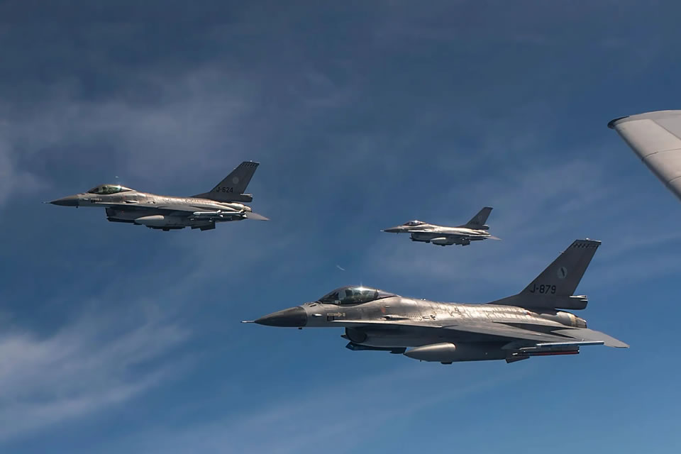

Авіація — це галузь техніки, пов'язана з розробкою і використанням літальних апаратів важчих за повітря.
Під поняттям авіація також часто розуміють сукупність літальних апаратів важчих за повітря таких як літаки, гелікоптери, автожири, часто включаючи ще літальні апарати легші за повітря, і організації що їх використовують чи обслуговують, розрізняючи цивільну авіацію і військову авіацію.
Основою розвитку технічних засобів авіації є такі наукові дисципліни як теорія авіації, теорія літака, аеродинаміка, теорія двигунів та інше.

Етимологія
Слово Авіація (фр. Aviation) вперше було вжите французьким письменником і колишнім офіцером Габріелем Ла Ланделе в 1863.В свою чергу він вигадав термін на основі дієслова Avier (невдалим неологізмом для позначення «літати»), на основі латинського слова Avis (Птах).
Історія Авіації
Перший успішний політ на літаку з двигуном внутрішнього згоряння здійснили 17 грудня 1903 р. американські механіки брати Вільбер і Орвілл Райт.
Слідом за цим будують літаки бразилець Альберто Сантос-Дюмон, француз Ф. Фербер, єврей Я. М. Гаккель, українці Д. П. Григорович та Ігор Сікорський. Наприкінці 1909 року в місті Єлисаветград з’явилося відділення першого в Російській імперії Товариства повітроплавання.
З середини 1920-х в літакобудуванні почали використовувати дюралюміній; до середини 1930-х стався перехід від біплану до моноплану.
Наприкінці 1930-х з'явився реактивний двигун. З початку 1950-х реактивні літаки почали використовувати і в цивільній авіації, в військово-повітряних силах з'явилися надзвукові літаки.
До початку 1990-х серійні літаки досягли швидкості 3000-3500 км/год, максимальної висоти польоту понад 30 км і дальності до 15 тис. км
21 червня 2004 року SpaceShipOne став першим приватним літаком, який здійснив космічний політ, відкривши можливість авіаційного ринку, здатного покинути земну атмосферу. Тим часом прототипи літаків, що працюють на альтернативних видах палива, таких як етанол, електроенергія і сонячна енергія, стають все більш поширеними.
Але окрім цивільної авіації ще більш стрімко розвивається військова. Темпи розвитку просто зашкалюють.
Військова авіація
Військова авіація — різновид авіації, що застосовує різні види літаків, вертольотів та інших літальних апаратів, з метою ведення військових дій у повітряному просторі. Термін «військова авіація» у низці країн, відповідає визначенню Військово-повітряні сили.